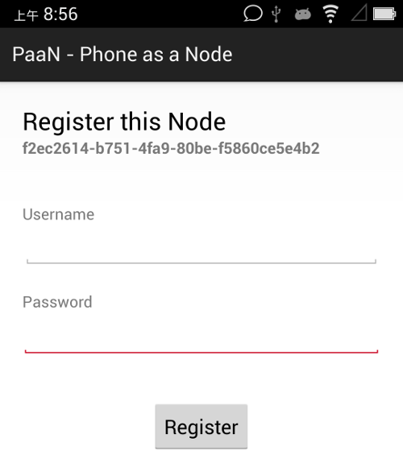
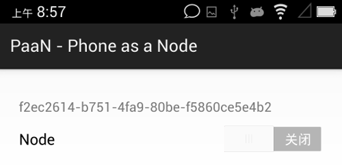

第一台测试设备
你已经有nodewox.org帐号了。想看效果，至少要接入一台设备。然才及入门，何来nodewox设备呢？
感谢 PaaN (Phone as a Node) 项目，它可将安卓手机/平板的传感器及功能nodewox化，使其能接入nodewox物联网。这样，初学者就能快速地获得一台测试用设备。（截至目前，PaaN仅适配Android 4.2以上版本。）
以后，将这种安装了PaaN应用的安卓手机称为PaaN设备。
安装PaaN应用
请从 PaaN (Phone as a Node) 下载.apk文件，并安装。
安民告示
因尽可能多利用硬件故，PaaN会申请较多权限。但牠是一个光明正大的软件，不会窃取任何信息。敬请放心。
PaaN设备入网
按nodewox.org规范，每台设备需先登记注册，倒(核)换(验)官(证)文(书)，方可入网。所以，这第一台PaaN设备初始展示的是PaaN设备注册登记界面：

在此输入你的nodewox.org用户名/口令，按Register，将设备注册到该账户名下。片刻…, 一旦注册成功，显示如下界面：

打开开关，接入nodewox.org网络。
管理物联设备
nodewox.org可通过PC浏览器，或移动app进行管理，详细见前章描述。
用PC浏览器管理
用你的帐号登录 https://www.nodewox.org，进入管理后台，可看到你名下已登记的设备列表（如设备未及时出现，请点击刷新设备按钮，或者刷新浏览器）。
点击设备名前的箭头，可以打开/折叠该设备下属的通道项（通道多少，依硬件设备而不同）。如设备及通道为灰色，表示未入网；如为黑色，表示已接入。
当一个设备接入nodewox后，”设备列表”中该设备及其通道将变成黑色；当设备断开nodewox后，其对应颜色变灰。
请按以上描述接入/断开你的PaaN数次，验证事实是否如此。
用移动app管理
在移动设备上启动nodewox.org应用并登录。
在 我的设备 页显示已注册设备，颜色规则同前述。
点击某设备，进入设备详细信息，其中显示出该设备下通道。
点击某通道，进入该通道详细信息。
小结
至此，你已经实现：
- 注册了一台测试用PaaN设备，并将其接入nodewox网络。
- 了解如何用浏览器进入nodewox网络管理后台
- 在手机上安装了nodewox.org管理app，及其使用概念
请继续学习后续课程，以了解更多nodewox的精彩能力。